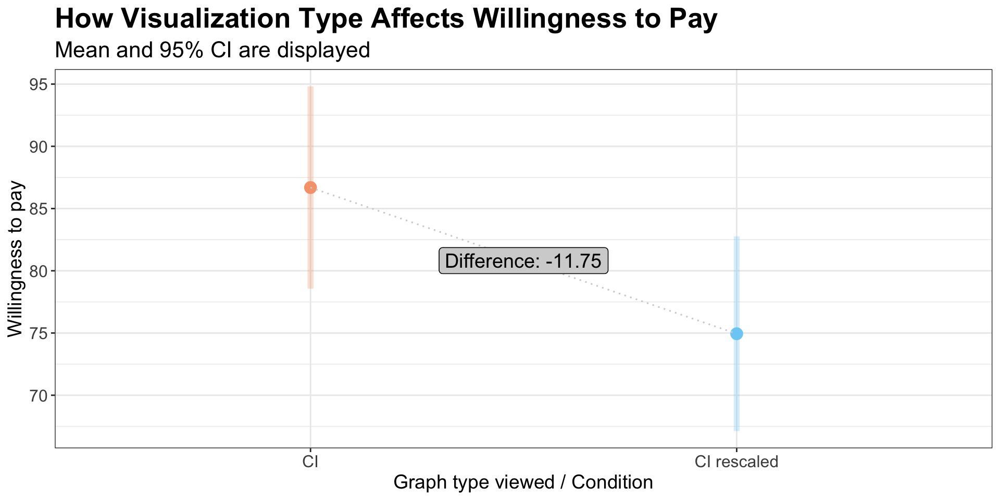

p = 0.048 (4.8% of 5000 permutations)Null Hypothesis Significance Testing via Permutation Tests
\[ H_{0}: \mu_{\mathrm{CI}} - \mu_{\mathrm{CI\ rescaled}} = 0 \]
Pick two conditions & calculate observed difference
What proportion of random shuffles produced effects as large as the real data?
p = 0.048 (4.8% of 5000 permutations)Standard Error (SE) (i.e., SD of null distribution): 5.785 Group Difference/SE = Standardized Test Statistic
🔗 Links: [Tutorial URL] | [GitHub Repo]